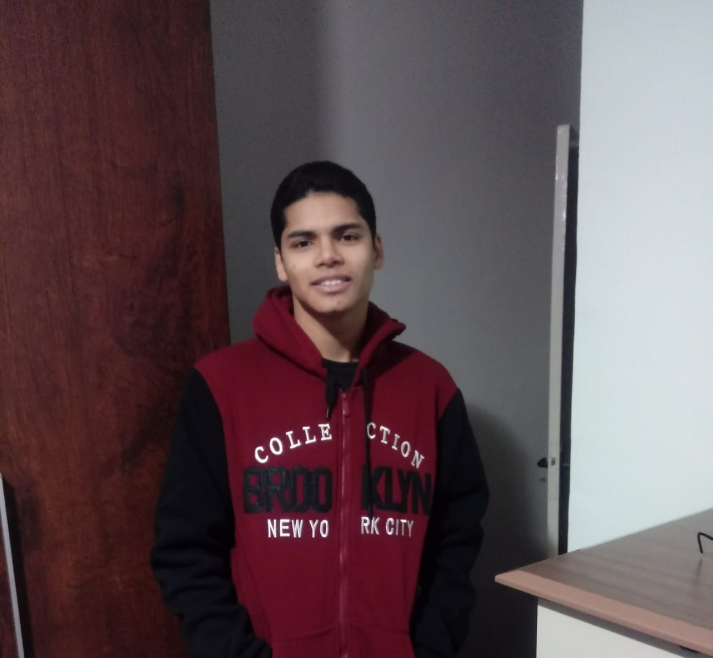

section

Julio Giancoli R. Ramalho
"19 anos, natural de São Roque - SP, fanático pelo time do coração e interessado por tecnologia desde criança, quando vivia instalando jogos na máquina do meu avô sem ele permitir. Já cursei outra faculdade, mas a vocação pela computação sempre esteve presente, então resolvi correr atrás da área. Responsável pelo conteúdo da página do filme “Fuga do Planeta dos Macacos", Página “HQS” e resenha do Livro, além da execução do HTML e do CSS das páginas: FILMES (HUB INICIAL), PÁGINA INICIAL, HQS, GAMES, CSS base do projeto e a implementação e tratamento das imagens dispostas no site."
section
Pedro Giancoli R. Ramalho
"19 anos, de São Roque - SP, provavelmente o fato mais interessante sobre mim é que eu tenho um irmão gêmeo, e ele está assim como eu, nesse grupo do projeto integrador. Assim como ele, sou fanático pelo meu time do coração, e na companhia do meu irmão aprendi a mexer no computador muito cedo. Fui responsável pelo design do wireframe e grande parte do mockup, além do conteúdo de 5 das páginas. Também utilizei os conhecimentos passados a mim no semestre para realizar o HTML e o CSS da página "livro"."
section
Arthur Fernandes Barros
"18 anos, de Araçariguama - SP, O mais interessante sobre mim é fato de tocar contrabaixo. Sou fanático por cultura pop (principalmente mangás) e no tempo livre gosto de desenhar. Fui responsável por 3 páginas, sendo elas, a página base para os filmes, a página de outras mídias e hub filmes (Em parceira com o Julio), fiz a A.I (arquitetura da informação) também fui responsável pela criação da logomarca e banner para o grupo e o site respectivamente e também fiz algumas resenhas e texto para o site."
section
Adriano Gomes da Paz
"23 anos, nascido e crescido em São Roque, trabalho no hortifruti do Supermercado São Roque e sempre tive interesse na área de informática. Já fiz um curso na Interativa de criação de jogos e de digitalização, e no Senai de informática básica. Tenho o objetivo de seguir e trabalhar neste ramo por estar em crescente demanda, ter bastante oportunidade de emprego e sempre estar em inovação. As minhas contribuições com o projeto integrador foram: Conteúdo escrito: “Planeta dos Macacos” (1968), “De volta ao Planeta dos macacos”, “A conquista do Planeta dos macacos”, “Planeta dos macacos: O Reinado” (2024) e o HTML e CSS da "página sobre nós". "